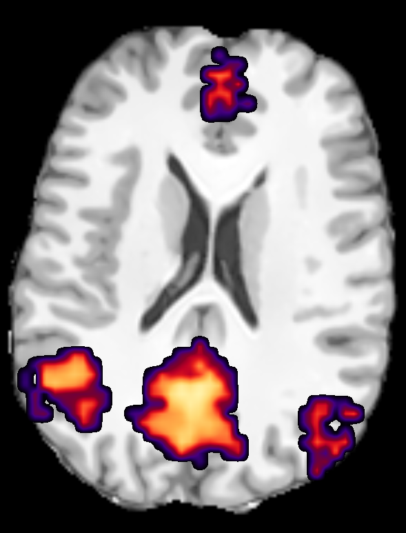

Fibernavigator
Real-time resting-state fMRI tutorial
For this tutorial, you will need to download this example dataset.
First, let's open the anatomical T1-weighted image.
The scene should display something like this (tip: Hit the "S" key for a perfect superior view).

Now, go to the rsfMRI networks panel (center of the screen) and hit the "Load resting-state" button. Select the provided rest-final dataset.
So far, the main canvas still only displays the anatomical T1. Let's position a ROI in the PCC (click once on the sagital plane from the top left 2D windows). Next, hit the box icon to create the ROI.
We are now ready to perform real-time rs-fMRI connectivity. Simply click the "start" button. Correlations should appear in the main canvas window.
Feel free to drag the ROI around (hold right click) and explore the brain's connectivity. Once you are satisfied with the current view, you can export and save the desired network to a .nii file by hitting the "generate map" button.A new anatomy has been added to the list of current datasets. To put it on top of the T1, simply go back to the properties tab by clicking on the navigation arrows (middle of the screen). Move the network on top of the T1 and voilà!
